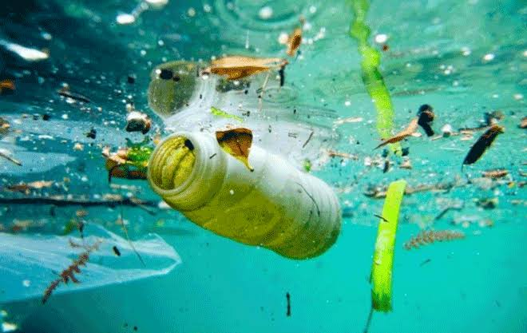
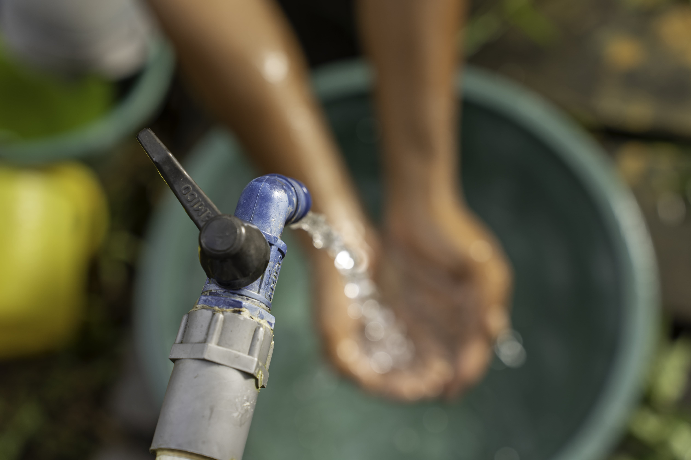
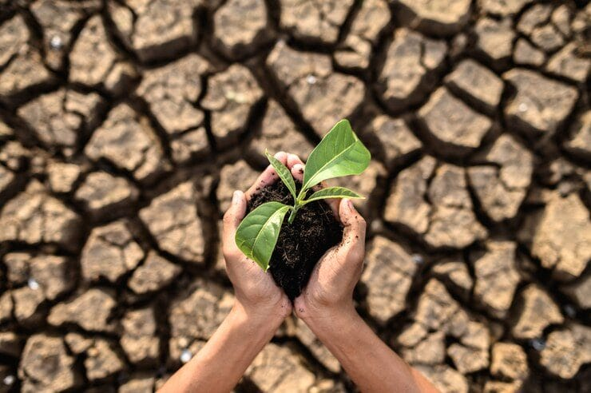

01
Mengenal Konservasi Air
Konservasi air dilakukan untuk mengurangi pemborosan dan menjaga ketersediaan air bagi manusia serta lingkungan.
.png)
Air merupakan sumber kehidupan yang perlu dijaga. Melalui kebiasaan sederhana, kita dapat mengurangi pemborosan air dan membantu menjaga ketersediaannya untuk masa depan.
Pelajari Cara Menghemat Air ↗Konservasi air adalah upaya menjaga ketersediaan dan kualitas air melalui penggunaan yang bijak serta perlindungan sumber air.
Konservasi air dilakukan untuk mengurangi pemborosan dan menjaga ketersediaan air bagi manusia serta lingkungan.

Air dibutuhkan untuk minum, memasak, kebersihan, pertanian, dan berbagai aktivitas sehari-hari.

Pencemaran, penggunaan berlebihan, dan kerusakan lingkungan dapat mengganggu ketersediaan air bersih.

Gunakan air sesuai kebutuhan, perbaiki kebocoran, dan manfaatkan air secara efisien.
Menutup keran saat tidak digunakan adalah langkah sederhana untuk mengurangi pemborosan air.
Kebiasaan kecil yang dilakukan setiap hari dapat membantu menjaga air tetap tersedia.

Mulai dari aktivitas sehari-hari. Hindari membiarkan air mengalir tanpa digunakan dan perhatikan kebocoran pada keran maupun pipa.
Gunakan air secukupnya dan hindari mandi terlalu lama.
Segera perbaiki keran dan pipa yang bocor.
Matikan keran saat menyikat gigi atau mencuci peralatan.
Jangan membuang sampah atau limbah ke sungai.
Gunakan kembali air yang masih layak untuk keperluan yang sesuai.
Ajak keluarga dan teman membiasakan perilaku hemat air.
Tidak harus menunggu tindakan besar. Mulai dari satu kebiasaan hemat air setiap hari.